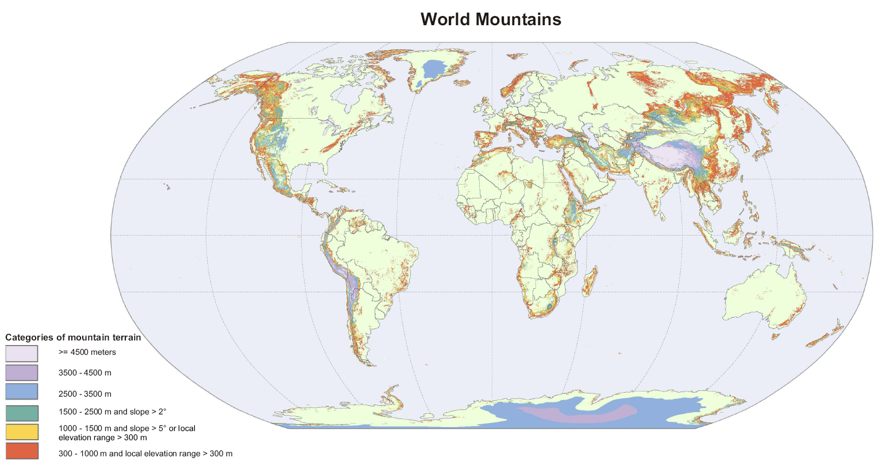
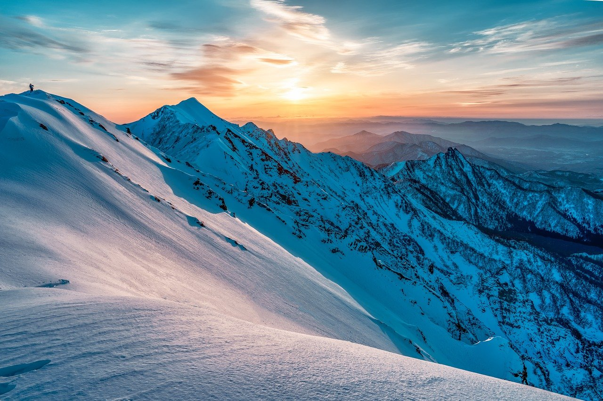
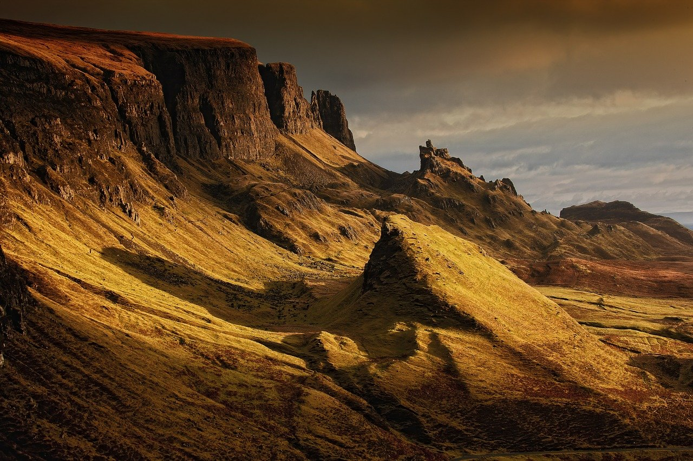

Einführung
Geologisch und geographisch zusammengehörige Berge bilden ein Gebirge oder einen Gebirgszug. Dabei wird unterschieden zwischen Hochgebirgen und Mittelgebirgen. Einzelstehende Berge werden als Inselberg bezeichnet.
Die Benennung einer Geländeform durch den Menschen als eigenständiger Berg ist subjektiv und nicht scharf von der Bezeichnung Gipfel abgegrenzt. Klar ist darum einzig, dass es mehr Gipfel als Berge gibt. Im Normalfall wird ein Berg einen Haupt- und mehrere Nebengipfel aufweisen, da nach Definition der Bergsteigervereinigungen schon ein Gegenanstieg von 30 Metern für einen Gipfel ausreicht.

Etymologie



×